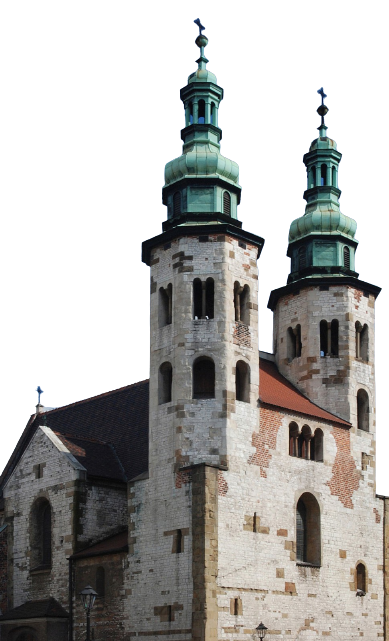
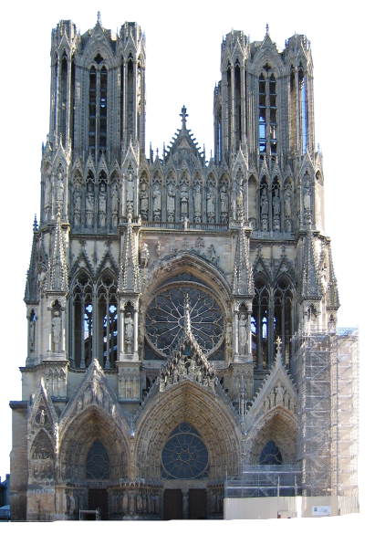

Wznoszone w tamtych czasach kościoły często z założenia pełniły funkcję obronną, z tego powodu miały grube mury i małe okna. Masywna konstrukcja wynikała również z konieczności rozłożenia ogromnego ciężaru sklepień i dachu zarówno na znajdujące się wewnątrz kloumny, jak i na ściany zewnętrzne świątyń.
Budowle nie musiały już pełnić funkcji obronnej, ponieważ miasta były opasane przez mury i inne umocnienia. Zachęcało to do projektowania budowli wysokich, widocznych ze znacznej odległości. W tym celu wprowadzono konstrukcję lżejszą i zastosowano nowe rzwiązania techniczne.
Od XI do XIII wieku w architekturze i sztuce ziem polskich niepodzielnie panował styl romański. Jego nazwa nawiązuje do tradycji starożytnego Rzymu (Roma) oraz do narodów romańskich (Włochów, Francuzów), które ów styl stworzyły i rozwinęły. Ponieważ budowle romańskie były bardzo kosztowne, młode państwo mogło sobie pozwolić na wznoszenie niemal wyłącznie obiektów sakralnych: kościołów, kaplic, klasztorów. Najstarsze polskie świątynie cechuje skromność, prostota i stosunkowo niewielkie rozmiary. Z łatwością jednak możemy odnaleźć w ich murach najważniejsze cechy stylu romańskiego. Jako budulca używano ciosów kamiennych – starannie wykutych („ociosanych") w formie prostopadłościanów bloków granitu lub piaskowca. Dzięki nim romańska ściana była bardzo solidna i prawdziwie elegancka. Podkreślała wyjątkowość świątyni – często jedynej murowanej budowli w promieniu dziesiątków kilometrów. Świątyniom nadawano prostą formę. Budowano je na planie kwadratu, prostokąta, niekiedy koła (rotundy). Najbardziej okazałe wznoszono na planie krzyża. Kościoły oglądane z zewnątrz, z pewnego oddalenia, sprawiają wrażenie jakby zestawiono je z wielkich brył geometrycznych. Prostopadłościanowi głównej nawy mógł towarzyszyć walec okrągłej wieży, lub dwa smukłe i wysokie prostopadłościany wież kwadratowych.
Gotycka architektura sakralna charakteryzowała się smukłością i strzelistością. Kościoły zyskały na wysokości. W lekkich, ażurowych ścianach pojawiły się ogromne okna. Ciężaru stropu i sklepień nie dźwigały ściany, lecz - przez wymurowane z kamienia (rzadziej z cegły) żebra - był on przenoszony na specjalne filary – przypory. Przypory przylegały do murów świątyni lub stały w pewnym oddaleniu – wówczas pomiędzy nimi a żebrami sklepień znajdowały się łuki przyporowe. Elegancję stylu gotyckiego podkreślały wyjątkowe elementy ozdobne. W wielkich oknach wstawiano misternie układane z kolorowego szkła witraże. Wypełniały one wnętrza świątyń wielobarwnym światłem. Polichromie, którymi dekorowano ściany kościołów zapoznawały wiernych z opowieściami biblijnymi lub dziejami świętych. W górnych partiach okien umieszczano kamienną plecionkę – maswerk. Mury budowli zdobiono wypalanymi na ciemno cegłami, które układano w geometryczne wzory. Świątynie dekorowane były kamiennymi rzeźbami, delikatnymi detalami architektonicznymi. Dominującym kształtem był łuk ostry, nawiązujący do formy sklepienia. Na ziemiach polskich, gdzie kamień był drogi i trudny do zdobycia, podstawowym materiałem budowlanym była cegła. Styl gotycki wykorzystywano także przy wznoszeniu licznych budowli świeckich. Mieszczaństwo, rycerstwo, władcy chętnie korzystali z umiejętności gotyckich architektów. Powstawały okazałe ratusze, podkreślające zamożność i znaczenie miasta. Wielkością, bogactwem ozdób, wysokimi wieżami mogły konkurować ze świątyniami. Pamiątką po gotyckich kamienicach, przebudowywanych często w następnych stuleciach, są pieczołowicie odsłaniane gotyckie detale.